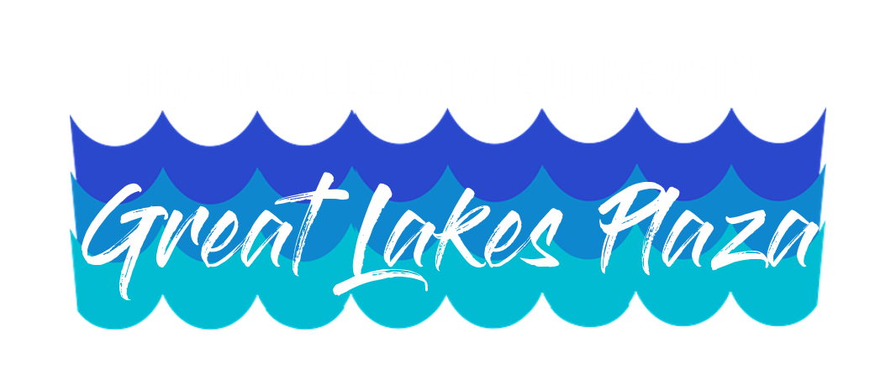
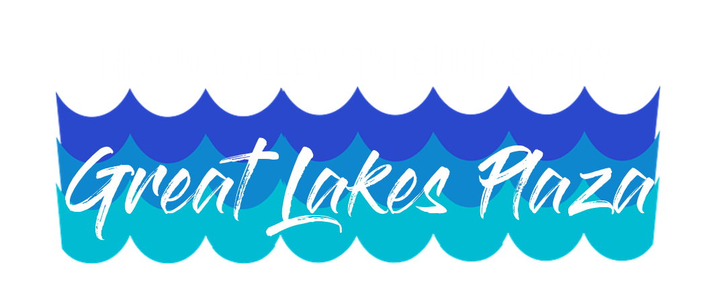

Hi, I'm AJ Carter
Experience & Skills
Web Development
In the summer of 2019, I interned at Northrop Grumman as a Cyber Systems Engineer in San Antonio, Texas. My work was primarily focused on building and refining the UI of a web application. I worked closely with our site's UX Researcher to conduct usability evaultions and implemented UX design recommendations into the project. As a side project, I created the Spoti Stats web app which displays Spotify listening trends to the user.
Skills
- HTML/CSS/JavaScript experience.
- Developing web applications using Django framework.
- Experience working with APIs.
- Implementing web accessibility from the start of a project.
UX Research & Design
I'm passionate about creating products with the user at the center. I believe fusing UX design principles with enginnering results in some of the best products. Through my internship and research experience, I have had the opportunity to apply UX design/research methods to actual products.
Skills
- Conducted usability evaluations that brought insights on features not working as expected.
- Card sorting experience that led to restructuring a website's site architecture.
- Heuristic evaluations that informed design recommendations.
- Writing quality research reports that summarized findings and recommendations for key stakeholders.
- Writing clear and consise documentation for python libraries and the UI for a web application.
Research
I'm interested in learning about how technologies and social media platforms can be leveraged to create positive impacts in people's lives. My research interests are LGBTQ+, social media, human-computer interaction, and sociocultural anthropology.
Skills
- Creating surveys, interviewing, qualitative coding, and affinity diagramming experience.
- I have qualitative and quantitative data analysis experience.
- I am currently on the Life Transitions and Social Media Project at the U-M School of Information.
- Co-authored on The Language of LGBTQ+ Minority Stress Experiences on Social Media.
Who am I?
I’m an enthusiastic debugger
I really enjoy the process of discovering, tracking down, and solving bugs.
In Practice
- I utilize resources and tools to quickly identify and work through bugs.
- I emphasize teaching debugging and problem solving skills to students.
- Being an Instructor Assistant for Data Programming (SI 206), I trobleshoot and walk through code daily.

I'm a quick & motivated learner
I can pick up skills fast. I'm good at identifying gaps in my knowledge and filling the gaps quickly.
In Practice
- I learned Robot Framework and I created automated testing scripts within a week while at Northrop Grumman.
- I picked up Django last summer and I built my first web app.
- I learned most of my HTML/CSS skills outside the classroom.

I'm a people person
I’m passionate about understanding people, their stories, and how technology can use these stories to build a better future.
In Practice
- Through my Anthropology minor, I am trained to think about people and the identities they hold.
- As Resident Advisor, I use restorative practices to build community and to understand the needs of others.
- I am driven by projects and technologies that directly impact people.
Designs


 
